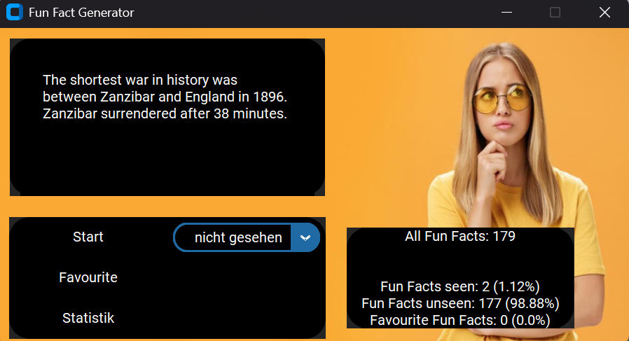
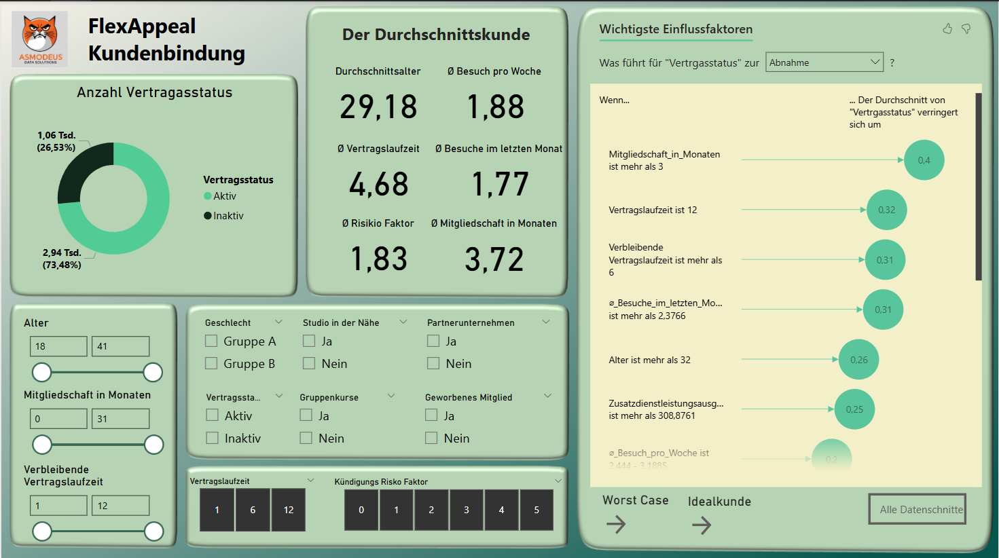

Kontakt
Folge mir

Aus meiner langjährigen Tätigkeit in der persönlichen Assistenz bringe ich ein hohes Maß an Verantwortungsbewusstsein, Kommunikationsstärke und Organisationstalent mit. In meiner aktuellen Weiterbildung zum Data Analyst habe ich gelernt, diese Fähigkeiten mit analytischem Denken und technischem Know-how zu verbinden. Ich arbeite selbstständig, lerne schnell neue Tools und Methoden kennen und bin motiviert, meine Kenntnisse kontinuierlich auszubauen und im Team einzubringen. Besonders wichtig sind mir dabei eine strukturierte Arbeitsweise und Zuverlässigkeit – Eigenschaften, die ich über viele Jahre in anspruchsvollen, verantwortungsvollen Tätigkeiten verfeinert habe. Meine Erfahrung im Umgang mit Menschen mit besonderen Bedürfnissen hat meine soziale Kompetenz und Empathie gestärkt, die ich heute auch in datengetriebenen Projekten nutze, um komplexe Sachverhalte verständlich aufzubereiten. Zudem bin ich es gewohnt, in stressigen Situationen den Überblick zu behalten und Lösungen zielorientiert umzusetzen. Ich suche eine Position, in der ich meine Fähigkeiten als kommunikativer und analytischer Teamplayer weiterentwickeln kann – idealerweise in einem Umfeld, das Innovation fördert und persönliche Weiterentwicklung unterstützt.
Data Craft Academy (remote )2023-2024
Im Rahmen meiner Umschulung habe ich mir fundierte Kenntnisse in Datenanalyse, Statistik und Visualisierung angeeignet. Dabei lag mein Fokus auf der praktischen Anwendung von Programmiersprachen wie Python sowie dem Umgang mit Datenbanken und modernen Analysetools. Neben technischen Fähigkeiten habe ich vor allem gelernt, komplexe Zusammenhänge verständlich aufzubereiten und datenbasierte Entscheidungen zu unterstützen. Diese Weiterbildung ergänzt mein bisheriges Profil und eröffnet mir neue Möglichkeiten in einem zukunftsorientierten Berufsfeld.
FAB eV Kassel, 2010-2023
In dieser Tätigkeit habe ich umfassende Erfahrung im eigenverantwortlichen Arbeiten und im Umgang mit sensiblen Situationen gesammelt. Besonders wichtig waren dabei Kommunikationsstärke, Empathie und die Fähigkeit, individuelle Bedürfnisse zuverlässig zu unterstützen. Außerdem habe ich ein Team von Assistent:innen koordiniert und organisatorische Abläufe effizient gestaltet.
GDA Wohnstift Göttingen, 2007-2010
Die Arbeit in der Pflege hat mir einen tiefen Einblick in strukturierte Arbeitsprozesse und interdisziplinäre Zusammenarbeit vermittelt.
Hier habe ich insbesondere meine Belastbarkeit, Ausdauer und Sorgfalt im täglichen Umgang mit Menschen und medizinischen Anforderungen gestärkt.
Zudem konnte ich wertvolle Erfahrungen im Bereich Dokumentation und Qualitätsmanagement sammeln.
In 13/16 Bundesländern Deutschlands, 2004-2010
In dieser Zeit habe ich mir durch vielfältige Tätigkeiten – u.a. im Handwerk, in sozialen Projekten, in der Gastronomie und im kreativen Bereich – eine ausgeprägte Anpassungsfähigkeit und hohe Lernbereitschaft angeeignet. Die ständige Einarbeitung in neue Aufgaben und Teams hat meine Flexibilität, mein Improvisationstalent und meine Neugier auf neue Themen entscheidend gefördert. Gleichzeitig habe ich gelernt, mich in sehr unterschiedlichen sozialen und kulturellen Umfeldern sicher zu bewegen.
In diesem Projekt wurden über eine API-Abfrage 365 FunFacts in einer Datenbank gespeichert, um sich diese mit einer App wiedergeben lassen zu können. Einzelne Fakten können als Favoriten gespeichert werden und eine kleine Statistik gibt es auch.
Hier eine der früheren Projektarbeiten zum Abschluss des Moduls "Datenvisualisierung mit Python". Wir haben dazu Wetterdaten über eine API extrahiert, um sie via Streamlit sichtbar zu machen und auswerten zu können.
Das Dashboard, mit dem mein Team und ich bei der IHK-Prüfung überzeugt haben, darf hier natürlich auch auf keinen Fall fehlen. Hier ging es darum, anhand von Beispieldaten eines Fitnessstudios zu errechnen, welche Kunden ihre Verträge nicht verlängern werden und für die Marketingabteilung entsprechende Kundenprofile herauszuarbeiten.
